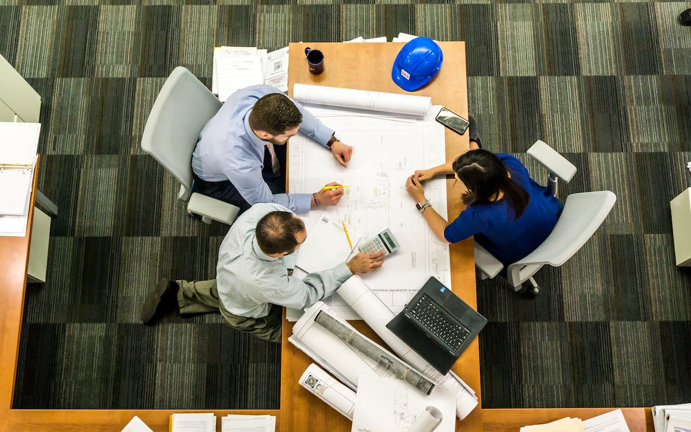

About Me
Highly motivated civil engineer with ten years of work experience in his profession. Innovative and lover of Engineering, with experience in design; from the initial conceptual stage and feasibility study to the detailed final design.
Passionate about learning and developing skills and enjoy solving problems using analytical methods and established engineering principles. I consider myself a person who has the ability to learn quickly, who likes to work and create a good work environment, who pays a lot of attention to detail, who has the ability to make decisions in important situations, and who likes to meet the proposed goals.
